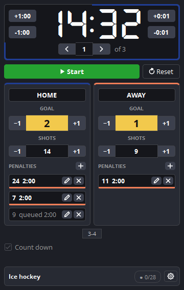
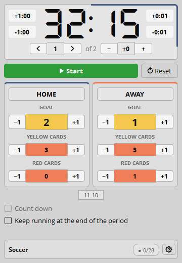
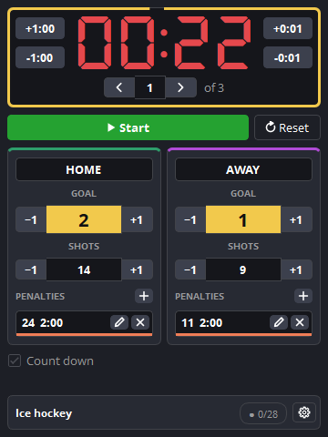
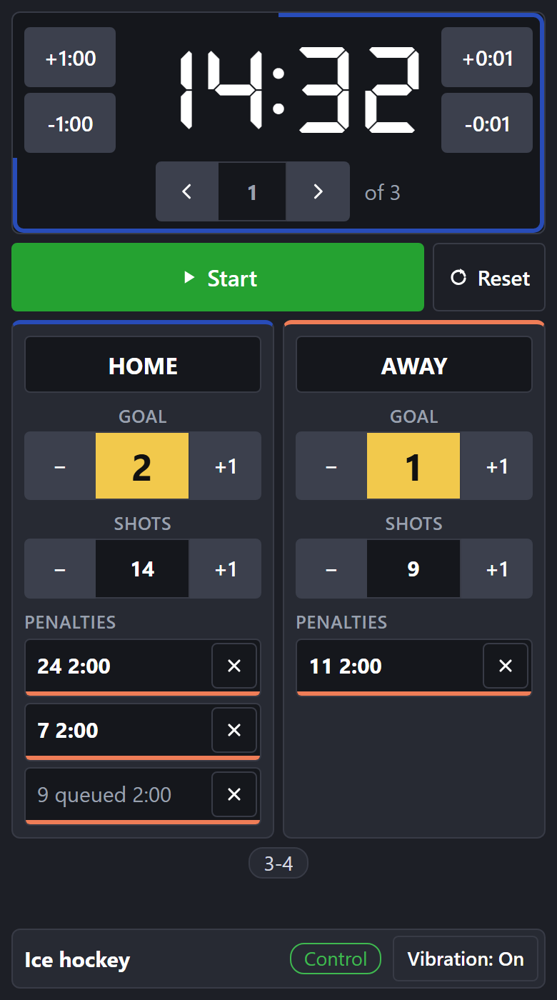

Links survive renames.
Links survive renames, scene changes, restarts and scene collections. Delete the source and the link simply lets go.
Never skip a second on air.
A scoreboard that writes straight into your Text sources, so the clock on your stream never jumps. No .txt files in between.
Both clocks start together. The left one is shown the way OBS reads a file: about once a second, by its timestamp.
The problem
19:28 never made it to air.
OBS re-reads the file about once a second and compares its modification time, to the second. Two updates in one second lose one. The request to fix it was closed as “not planned” (obs-studio #3012).
The fix
ScoreBoard changes only their text, through the OBS API, the moment a value changes. Font, colors and position stay yours; OBS shows the change on the next frame.



Sports
14 sports come ready with their periods, clock, points and penalties. Pick one and run the match: this demo uses the same defaults, and every value can be changed in OBS.
3 × 20:00 ↓ counts down
Overtime 1 × 5:00 · Shots; penalties 2′, 5′, 10′, 2+2, 2+5, 2+10; strength
Defaults from the presets: every value can be changed in the plugin.
Features
Links survive renames, scene changes, restarts and scene collections. Delete the source and the link simply lets go.
The event log keeps periods, goals and penalties with their times, and exports them as YouTube chapters.
Up to 8 per team, two running at once, the rest waiting. 2+2, 2+5 and 2+10 handled, with the strength text (5-4) worked out for you.
Up or down, from a monotonic clock. The arrows never go past the period length or below zero.
40 OBS hotkeys for clock, scores, periods and penalties, saved with your scene collection.
A source is written only when its text really changes, so nothing redraws for no reason. A .txt output is still there if another tool needs it.
Remote control
Open a link on a phone on the same network. One link only watches; the other also runs the clock, scores and periods.

Close OBS, install, then turn on Docks → ScoreBoard. The first launch asks for your sport.
The macOS package is not signed: the first time, right-click it and choose Open. Every release ships with SHA-256 checksums and a build attestation.